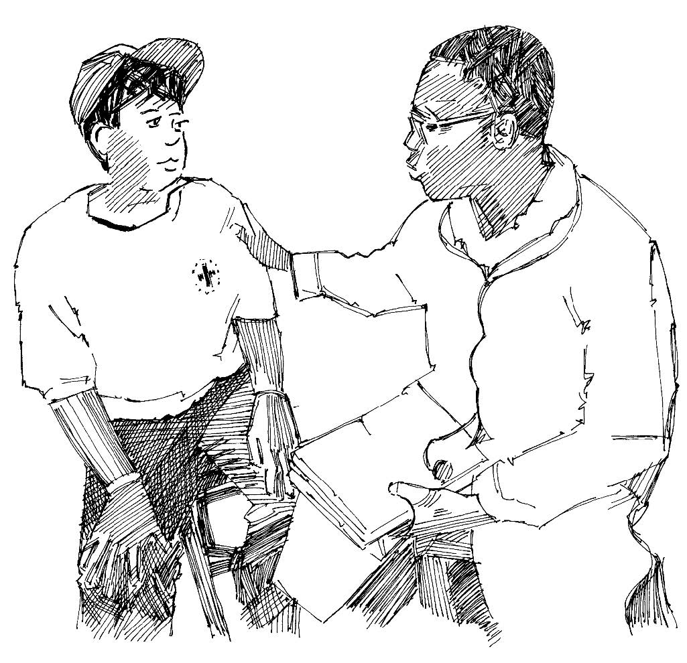

Aperçu
Pendant une épidémie, les malades ne peuvent souvent pas être soignés chez eux, par leur famille ou par des volontaires. Ils ont besoin de soins médicaux spécialisés et doivent se rendre dans un dispensaire ou un hôpital pour être traités.
Ce que vous devez savoir
- Informez-vous des critères permettant de déterminer qu’une personne est gravement malade et qu’elle doit consulter un professionnel de la santé. Familiarisez-vous avec les symptômes de la maladie et avec les lignes directrices que vous devez suivre pour agir.
- Renseignez-vous sur l’emplacement des établissements de santé proches de votre communauté, et déterminez vers lesquels vous devriez orienter les cas graves. Cherchez à connaître la capacité des établissements de santé locaux (leurs spécialités, le nombre de lits, etc.) et à savoir comment s’y rendre. Possèdent-ils des ambulances ? Peut-on y arriver en transports publics ?
- Entretenez-vous avec des professionnels de santé et convenez de la meilleure méthode pour transférer les malades de la communauté vers les établissements de santé. Si la maladie est très contagieuse (comme Ebola ou la fièvre de Marburg), un transport spécial doit être mis en place pour éviter que d’autres personnes soient contaminées.
- Lorsque vous surveillez la maladie, gardez toujours à l’esprit l’idée d’orienter vers les services de santé.
Ce que vous pouvez faire
- Mémorisez les symptômes de la maladie à l’origine de l’épidémie et les signes qui indiquent que les patients devraient être orientés vers un établissement de santé.
√ Visitez les centres de santé et échangez avec les médecins et infirmières. Exposez-leur vos activités et la manière dont vous prévoyez d’orienter les malades. Demandez-leur conseil.
- Déterminez quelles méthodes sont à disposition pour aiguiller les patients. Y a-t-il des ambulances ? Apprenez comment les appeler. Existe-t-il un système de transport public ? La Société nationale peut-elle assurer le transport ? Les gens ont-ils de l’argent pour payer le transport ?
- Munissez-vous toujours de la fiche maladie pertinente lorsque vous faites de la surveillance afin de vous aider à vous rappeler ce que vous devriez savoir sur la maladie et ses symptômes.
- Lorsque vous aiguillez un malade, expliquez toujours clairement à la famille concernée quelle est la maladie, quels sont ses symptômes, et quelles sont les raisons de votre décision. Donnez-leur des informations au sujet des établissements de santé existants et expliquez-leur comment s’y rendre grâce aux différents moyens de transport.

Volontaire s’entretenant avec un professionnel de la santé